把 agent 拆成会话日志、大脑、手三个接口
会话日志（session，只追加的事件记录）最持久；大脑（Claude 加 agent 循环）不存状态；手（沙箱和工具）用完就扔。拆开后，只有会话日志值得保护。
官方 YouTube 第 1 段 Anthropic 工程文章 官方文档 原文 + 幻灯片（精读版，需密码）录像 94:45 · 本页约 20 分钟
- 讲者 Priyanka Phatak（Claude Managed Agents 工程负责人）讲架构，前 11 分钟；Gabe Cemaj 带动手部分 Research Desk。
- 产品名 Claude Managed Agents（CMA）：Anthropic 托管 harness、沙箱、扩容和事件日志存储。
- 第 2–8 节跟着 18 张幻灯片走，每张按原样截图，标「原图 N」；第 9–10 节是现场演示和问答，只有转写。
- 中间有一个会话恢复模拟器，最后 6 道小测。
harness 编码了对模型的假设，假设会过期
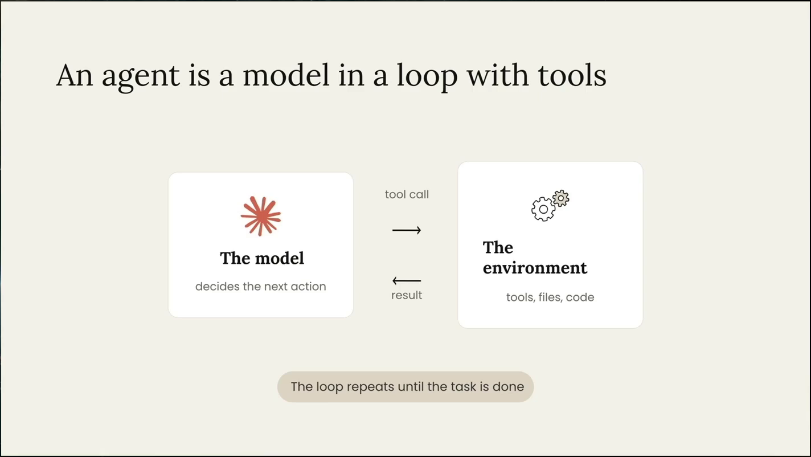
补充：这就是 CS146S 第 1 讲（L01）那个智能体循环。
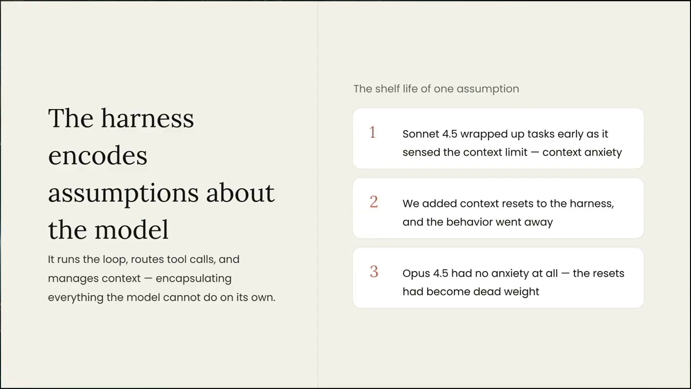
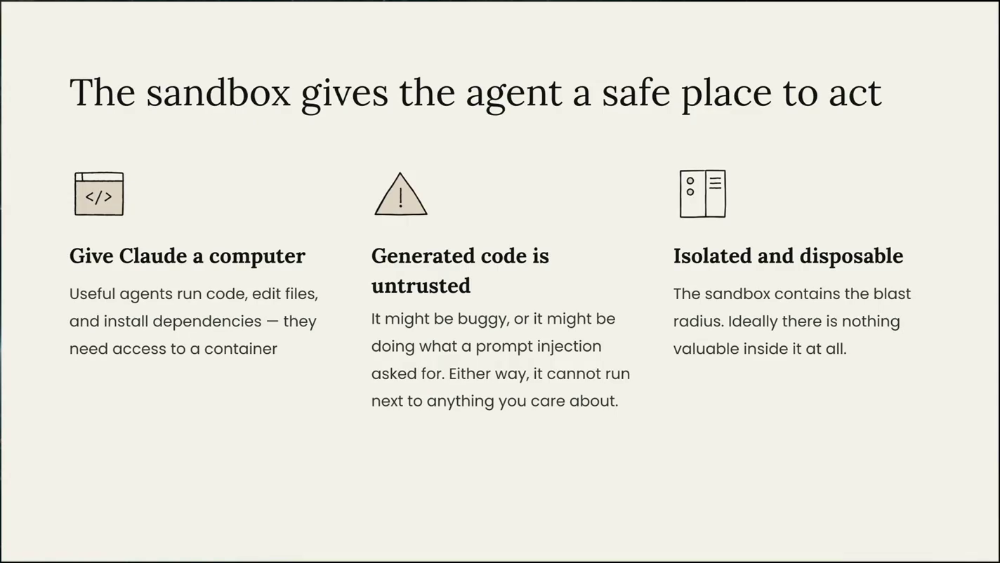
本节对应幻灯片：幻灯片 2 幻灯片 3 幻灯片 4 · 视频：讲者口述：时间点指 X 转载的完整录像（94:45）；官方 YouTube 分 4 段：第 1 段 · 第 2 段 · 第 3 段 · 第 4 段
全塞进一个容器，每个容器都成了宠物
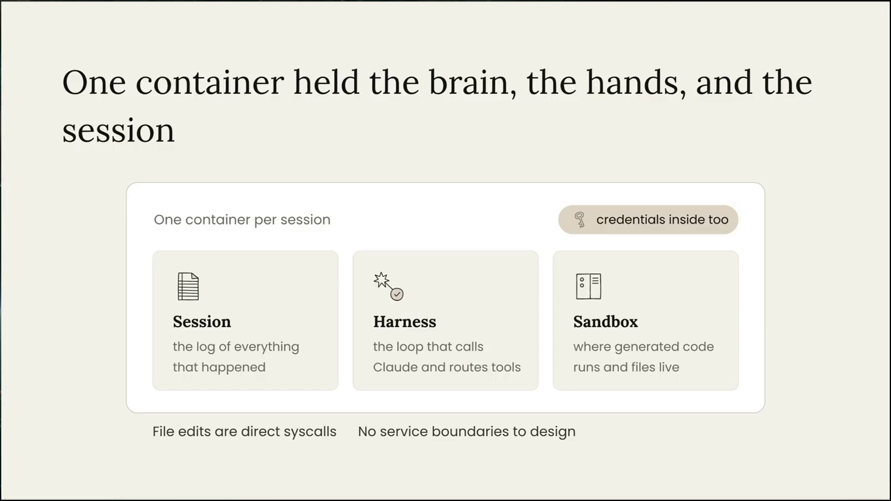
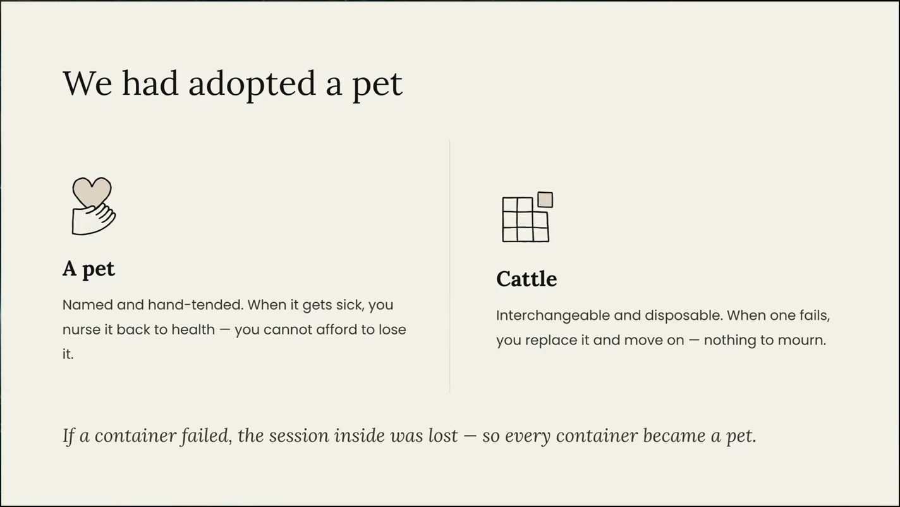
we realized we adopted a pet
Priyanka Phatak，视频 00:03:56YouTube 第 1 段 6:01
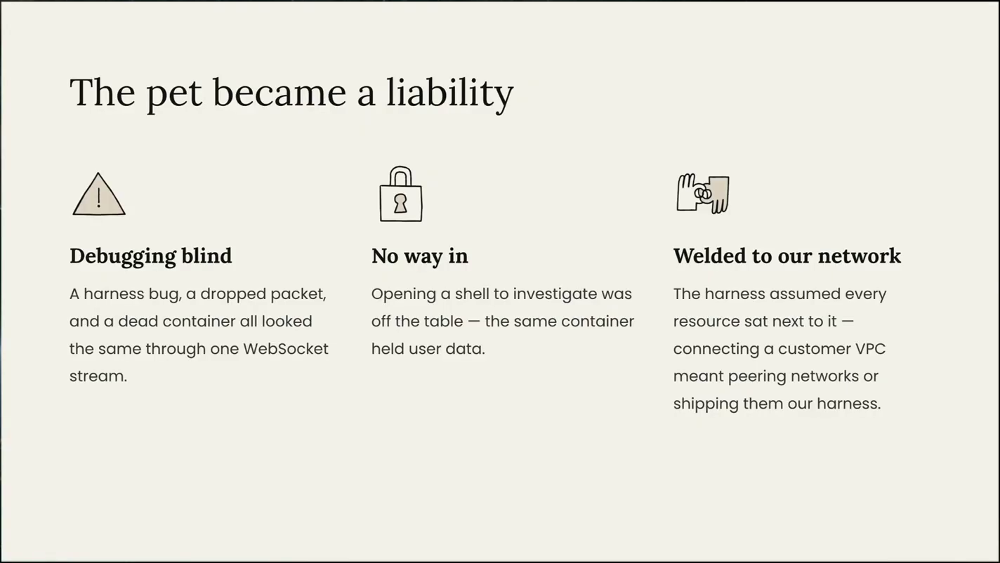
本节对应幻灯片：幻灯片 6 幻灯片 7 幻灯片 8 · 视频：讲者口述：时间点指 X 转载的完整录像（94:45）；官方 YouTube 分 4 段：第 1 段 · 第 2 段 · 第 3 段 · 第 4 段
沙箱和 harness 坏了都能直接换新的
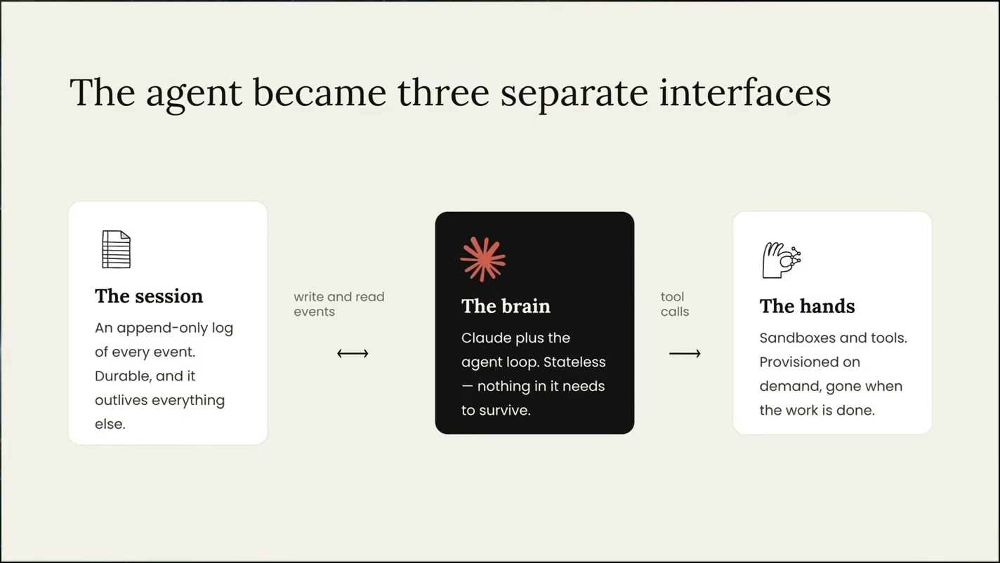
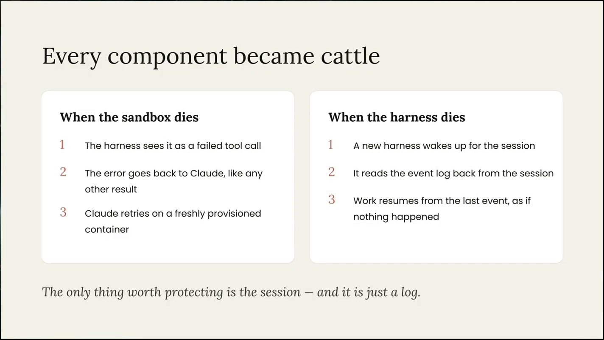
动手：一次托管会话怎么跑、怎么恢复
教学示例：按幻灯片 10–13、幻灯片 22–25 描述的机制编排，不是视频里的真实运行。
本节对应幻灯片：幻灯片 10 幻灯片 11 · 视频：讲者口述：时间点指 X 转载的完整录像（94:45）；官方 YouTube 分 4 段：第 1 段 · 第 2 段 · 第 3 段 · 第 4 段
凭证不进沙箱，由代理在出口注入
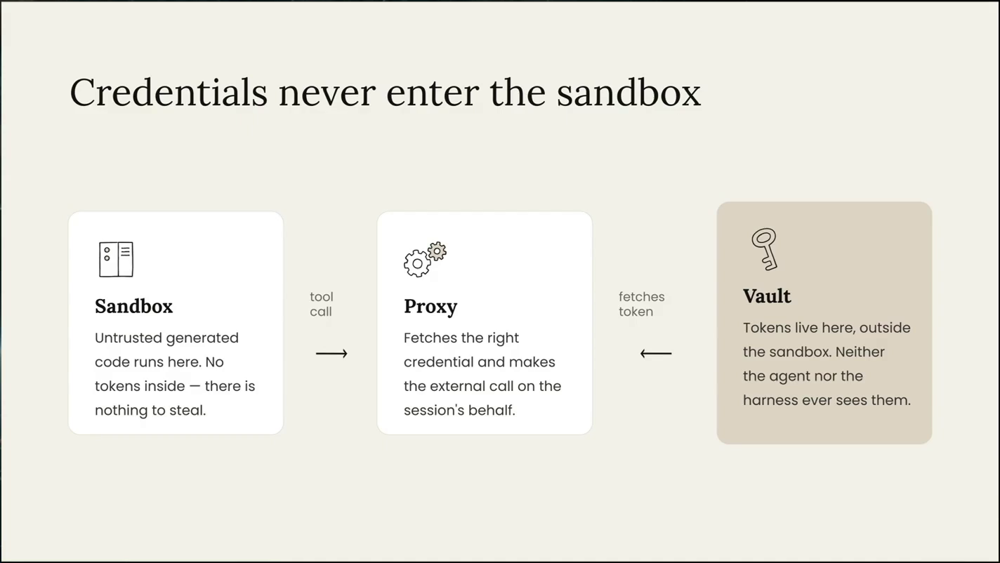
the model never sees your credentials or tokens
Priyanka Phatak，视频 00:07:26YouTube 第 1 段 9:30
问答里补充了 Vaults 的用法：环境变量里放占位符，出口处只对你指定的域名换成真值（视频 00:38:35–00:38:52）。私有数据可以用 MCP 加 vault；不想把 MCP 暴露到公网，用 MCP Tunnels 从你的网络打隧道进来；再不行就自托管沙箱（视频 00:47:51–00:48:17）。
本节对应幻灯片：幻灯片 12 · 视频：讲者口述：时间点指 X 转载的完整录像（94:45）；官方 YouTube 分 4 段：第 1 段 · 第 2 段 · 第 3 段 · 第 4 段
会话日志比上下文窗口活得久
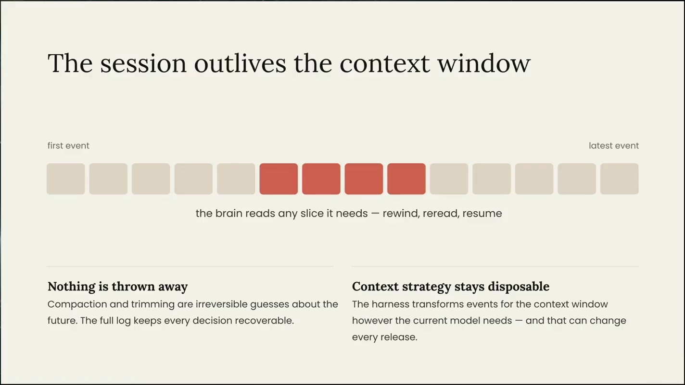
讲者说压缩策略因此可以灵活换：全部总结、只取最近 N 条都行，日志不受影响（视频 00:07:51–00:08:00）。问答里讲：CMA 替你做压缩（compaction），生产中见过 10 小时的会话（视频 00:55:47–00:55:51）。
本节对应幻灯片：幻灯片 13 · 视频：讲者口述：时间点指 X 转载的完整录像（94:45）；官方 YouTube 分 4 段：第 1 段 · 第 2 段 · 第 3 段 · 第 4 段
首 token 时间 p95 下降约 90%
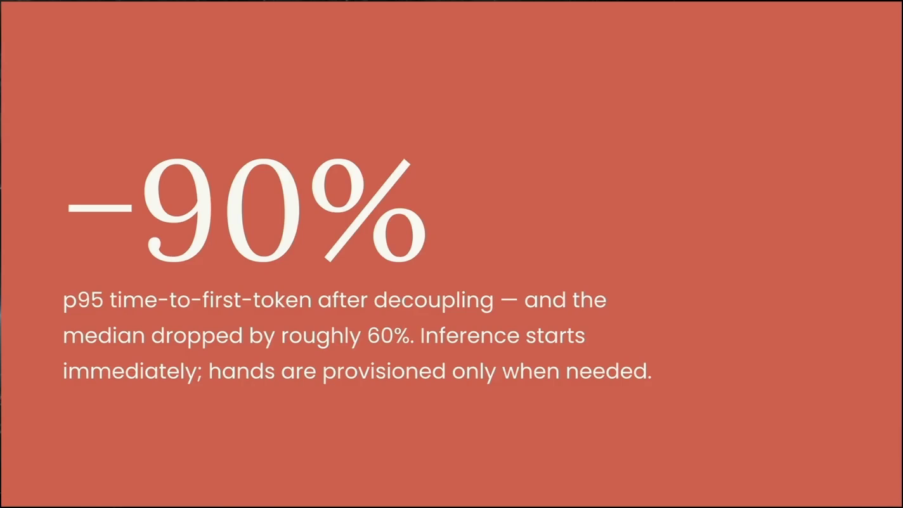
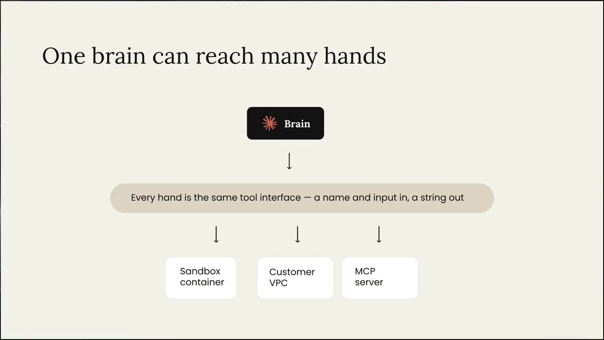
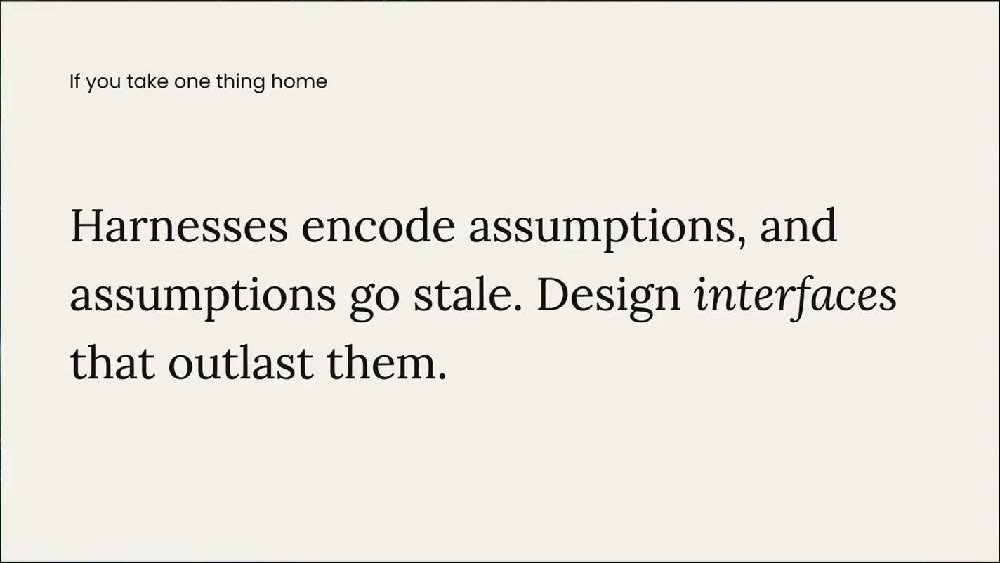
本节对应幻灯片：幻灯片 14 幻灯片 15 幻灯片 16 · 视频：讲者口述：时间点指 X 转载的完整录像（94:45）；官方 YouTube 分 4 段：第 1 段 · 第 2 段 · 第 3 段 · 第 4 段
四步：环境、agent、会话、事件流
API 怎么用：工作坊的第一个例子是一个讲笑话的 agent（视频 00:11:45）。
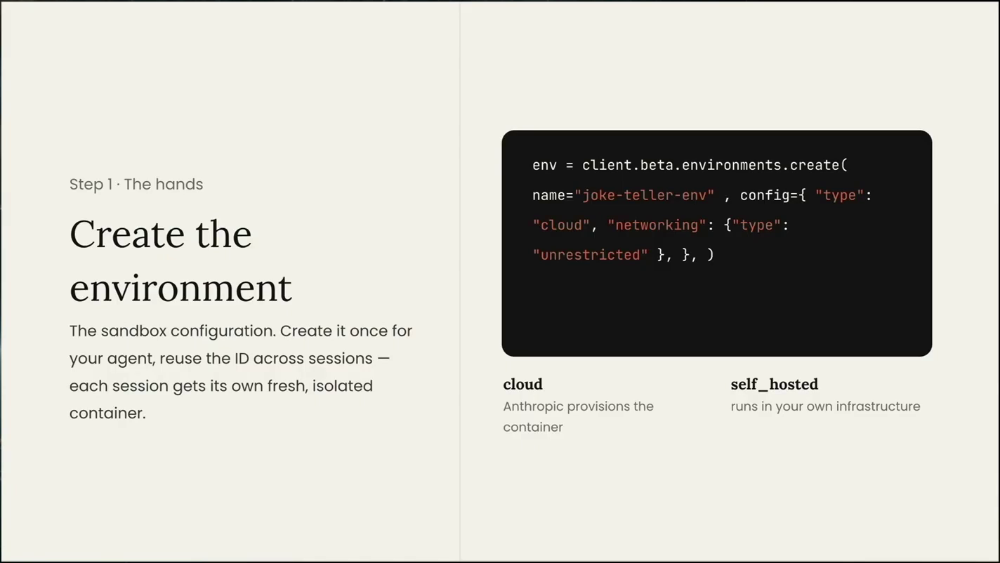
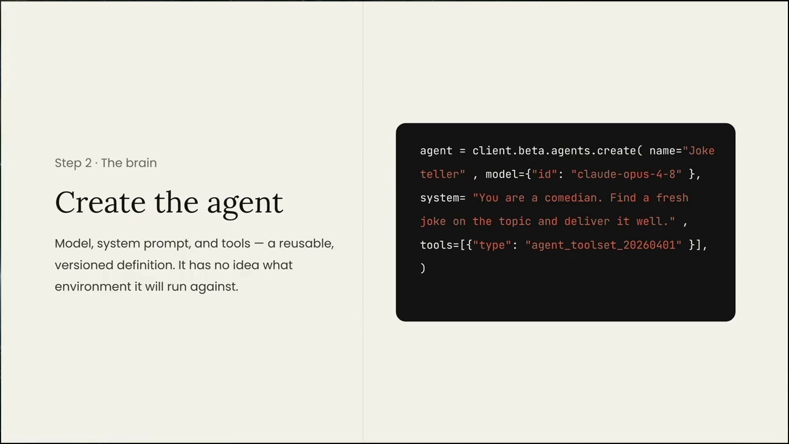
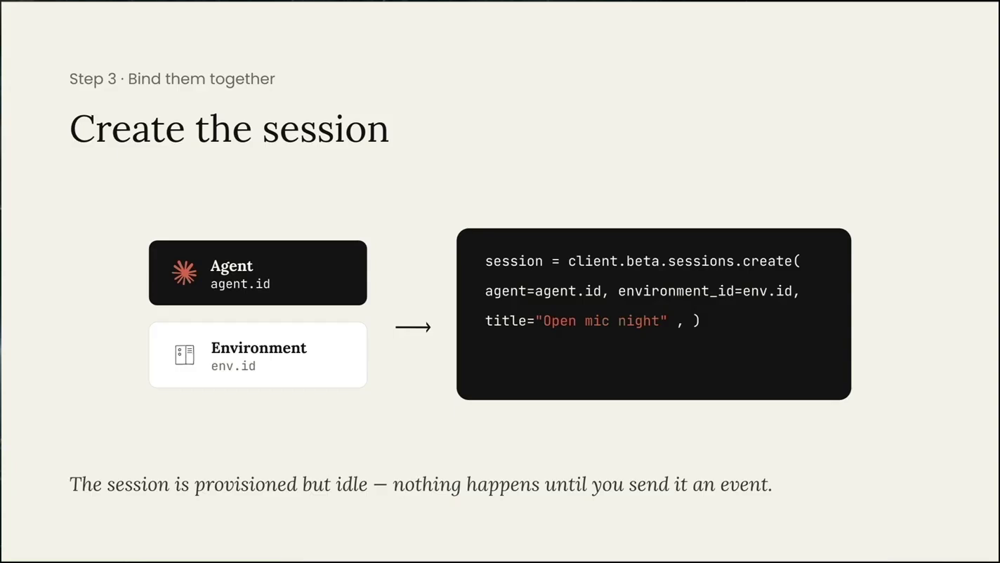
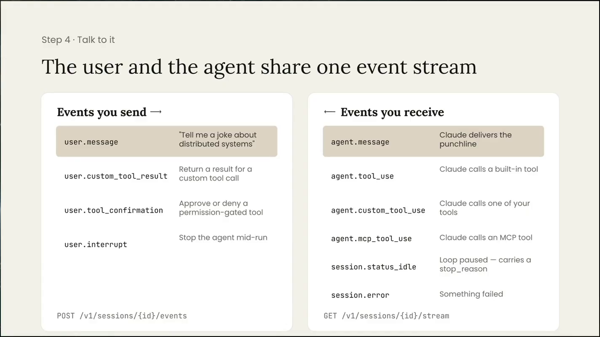
Console 演示里一句「build me an agent that tells me jokes」就生成了 prompt、名字和模型（视频 00:15:31）。
本节对应幻灯片：幻灯片 22 幻灯片 23 幻灯片 24 幻灯片 25 · 视频：讲者口述：时间点指 X 转载的完整录像（94:45）；官方 YouTube 分 4 段：第 1 段 · 第 2 段 · 第 3 段 · 第 4 段
Outcomes 用 rubric 检查，不过就重来
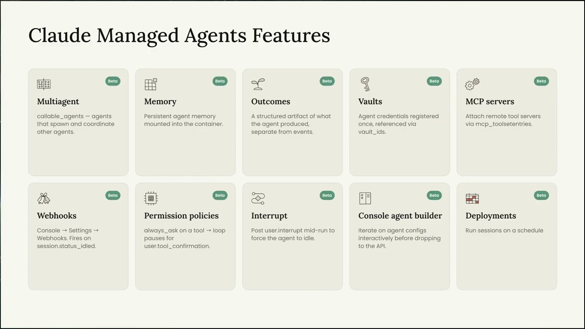
Research Desk 是读 SEC 文件、比较标的的 app。NVIDIA 回放：记忆库里没有之前的笔记 → 起子 agent 做财务提取和风险评估 → 汇总成 JSON scorecard、写记忆 → 检查方对照 rubric 判定 satisfied（视频 00:33:06–00:35:36）。
Outcomes is how we've created self-supervision.
Gabe Cemaj，视频 00:32:08YouTube 第 2 段章节「Outcomes and self-supervision」17:41
生成子 agent 时不复制会话记录，只复制工具描述、schema 和 prompt（视频 00:30:00–00:30:04）。Skill 是可更新的活文件：加入看新表单的能力后，新开的会话自动用新版（视频 00:36:49–00:37:06）。
这一段（约 18–33 分钟）现场网络差，转写质量最低；本节的细节以转写为准，未逐字核对画面。
本节对应幻灯片：幻灯片 26 · 视频：讲者口述：时间点指 X 转载的完整录像（94:45）；官方 YouTube 分 4 段：第 1 段 · 第 2 段 · 第 3 段 · 第 4 段
多会话编排靠 custom tool，判断好坏靠 eval
「Analyze Google and Microsoft」：主 agent 调 custom tool，为每个 ticker 开一个会话（视频 00:49:48–00:50:14）。
Deployments：agent 定义加定时、初始消息和记忆库等资源，按计划自动开会话，例如每季研究一次 NVIDIA（视频 00:51:25–00:51:42；视频 00:58:39–00:58:46）。
Dreaming（研究预览）：选一个记忆库，分析过去 30 天的会话，把学到的东西补进记忆库（视频 00:52:39–00:52:57；视频 01:03:56）。
今天没有按会话的 token 或金额预算上限；讲者说正在探索，「not something we offered today」（视频 00:41:55–00:42:05）。RBAC 在路线图上（视频 01:09:21）。
讲者说 Anthropic 拿到新模型先跑 eval，尽早更新 harness 假设、删掉不再需要的东西（视频 01:18:44–01:19:04）。
其他问答：Agent SDK 像无界面的 Claude Code（视频 00:40:41）；CMA 是受 Claude Code harness 启发重写的托管 harness（视频 00:41:13）。多租户建议用 workspace 做单元，不建议终端用户自带 key，因为会失去可观测性（视频 01:08:24–01:08:36）。CI/CD 用 ant CLI 把资源写成 YAML 同步（视频 01:16:17–01:16:38）。
补充：官方文档现在可能已有会话预算说明，视频里没讲，未确认。